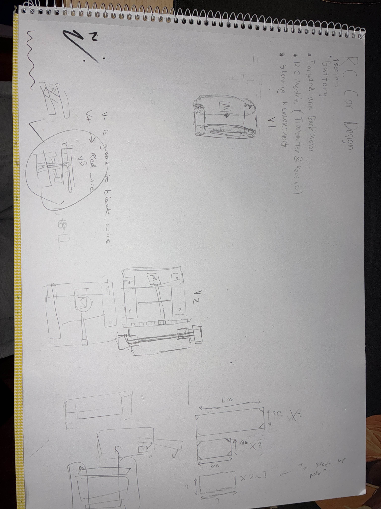
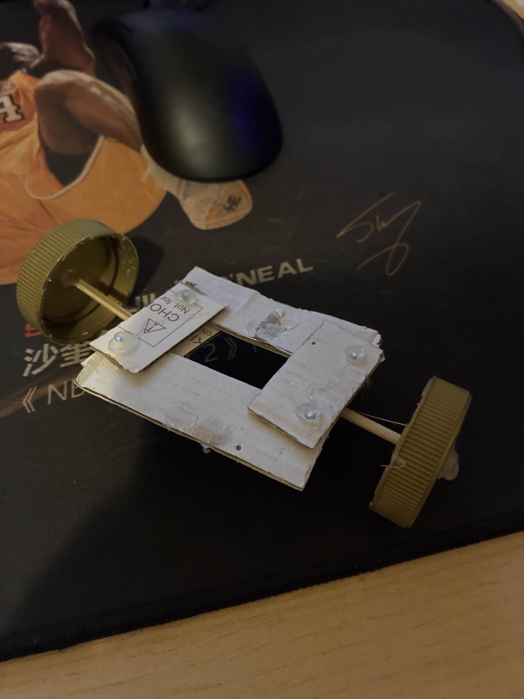
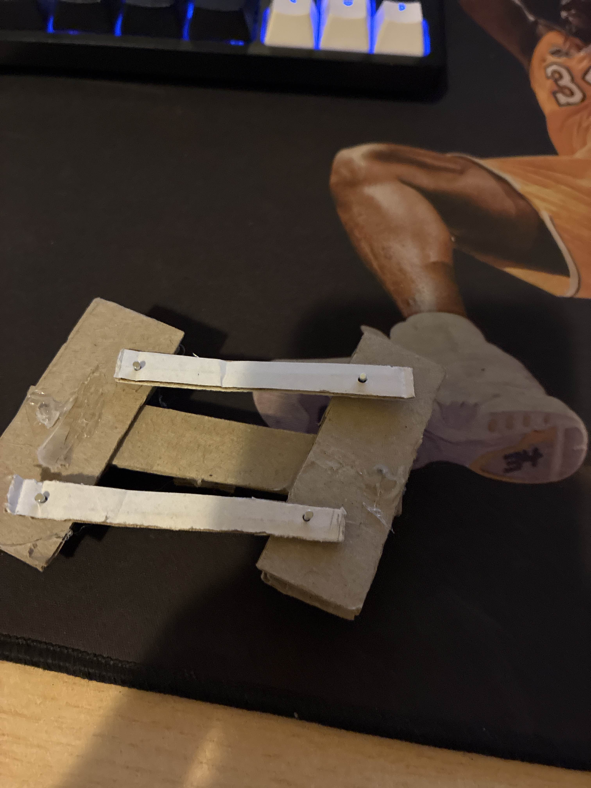
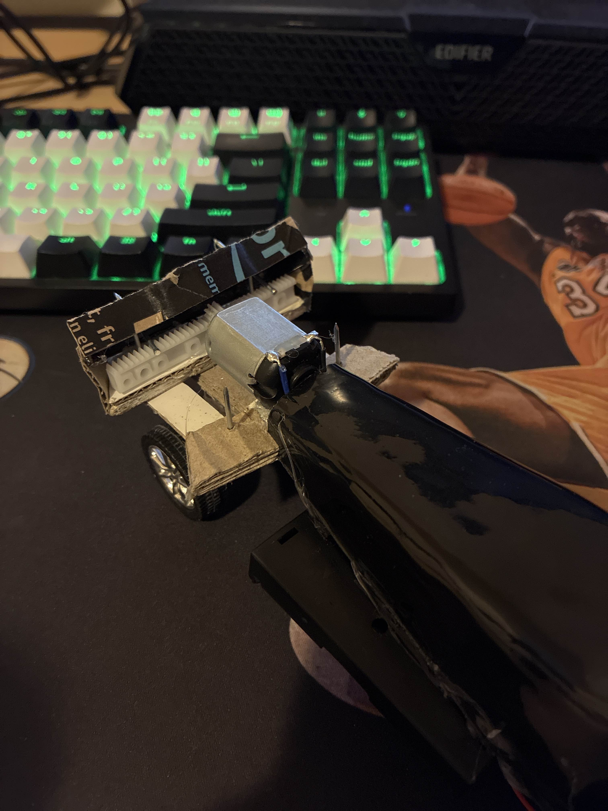

Project Scope & Components
My friend and I like thingies that move, so it became natural for us to build an RC car. This project fulfilled our interest and improved our problem solving and creative thinking, especially in the engineering field. It also enhanced our hands-on experience with tools.
The RC car is controlled via a 27 MHz 4CH RC module, with a wood chassis, plastic cover, and uses double batteries to power 2 DC motors. We explored circuit wiring, steering design, sketching, experimental design, and hardware troubleshooting.
Bill of Materials (BOM)
| Category | Components |
|---|---|
| Electronics | 27Mhz 4CH RC Tx/Rx, 3-6V DC motors, Wires, AA Batteries |
| Mechanical | Wood Chassis, Cardboard, Plastic Cover, 4× Wheels, Axles, Heat shrink, Screws/Nuts/Nails |
| Tools | Soldering iron, Hot glue gun, Pliers, Wire stripper, Scissors |
Steering System Evolution
Designing a reliable steering mechanism from scratch required multiple design iterations and rapid prototyping to get the geometry right.




Challenges & Problem Solving
During the build process, we encountered physical constraints and electrical faults. Each problem required targeted troubleshooting.
- Steering Torque Issue: The steering motor was unable to produce enough torque to overcome friction.
- Root Cause: 2 AA batteries did not produce enough voltage.
- Solution: Soldered two battery holders in series. The car now runs on 4 AA batteries (6V), maxing out the motors' potential. This was highly successful.
- Power Failure: The receiver failed to turn on.
- Root Cause: Found a poor connection on the V+ wire after continuity testing.
- Solution: Resoldered the V+ wire and ensured all lines had proper protection and mechanical strain relief.
Final Demonstration
The outcome is a fully functional RC car capable of forward/reverse driving and accurate steering.